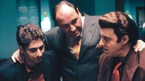
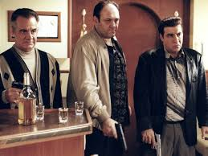

Argumento
Tony Soprano, italo-americano de Nueva Jersey, está estresado e
insatisfecho, atravesando una crisis de la mediana edad. El personaje de
Tony Soprano se construye desde la revisión de los modelos fundacionales
de la historia del cine de gánsteres que están presentes desde la cita
directa o indirecta, imitaciones, chistes, y toda clase de referencias
(la imitación constante de Michael Corleone que realiza el personaje de
Silvio, las charlas sobre El padrino, la proyección de El enemigo
público, etc.). Son héroes de ascenso y caída trágica, héroes clásicos
de los cuales Tony es un reflejo distorsionado y disgregado. Su
imposibilidad de mantener a sus dos familias en armonía y según los
códigos de la tradición lo piden lo son la causa de los ataques de
pánico que lo llevarán al psicoanálisis. La presencia de una madre
castradora y autoritaria que conspira contra su propio hijo, su tío que
es su principal rival en los negocios y también conspira contra él junto
con su madre, los conflictos generacionales con sus hijos y los
problemas de comunicación con su esposa son algunos de los ejes de su
terapia y de la serie. Y por el lado de la familia mafiosa, la lucha por
el poder como consecuencia de la muerte por cáncer del jefe, Jackie
Aprile, y más adelante los problemas con las familias de Brooklyn.

A diferencia de la mayoría de las historias de mafiosos, Los Soprano no
transcurre en Nueva York o Chicago sino en Nueva Jersey, cuya geografía
se nos invita a recorrer con los títulos iniciales de cada capítulo.
Frente a los grandes negocios mafiosos aparece el del reciclaje de
basuras. Otro de los grandes temas que recorre la espina de la serie es
la esencia y los conflictos del italo-americano en Estados Unidos, como
otra forma de problematizar el tema de la identidad (tanto individual
como grupal, y en las dos familias). A partir de estas bases, el autor
David Chase estudia con precisión de cirujano la condición humana y los
conflictos morales y existenciales de nuestra época, poniendo en primer
plano al hombre solo haciendo frente al mundo y al paso del tiempo.
Respuesta de la crítica
Los Soprano ha sido reconocida por los críticos como una de las mejores
y más innovadoras series de todos los tiempos.21113114115 Los
guiones, la actuación y la dirección han sido, a menudo, los elementos
más aplaudidos. La serie recibió, también, una considerable atención por
parte de críticos y periodistas por su maduro y artístico contenido, el
mérito técnico, la música seleccionada para los episodios, la
cinematografía y la voluntad de tratar temas complicados y
polémicos.57114115 Los soprano es el mejor programa de televisión de
la historia según la revista Rolling Stone: el 21 de septiembre de 2016
publicó "The 100 Greatest TV Shows of All Time" lista liderada por ésta
serie y basada en la opinión de actores, productores, directores,
escritores y críticos. En la misma publicación se reconoce a Los soprano
como el producto que revolucionó la industria por su calidad y
profesionalismo, dando inicio a lo que sería el auge creativo propio de
la televisión del siglo XXI. El periodista de Vanity Fair Peter Biskind
aseguró que Los Soprano era "quizá la obra maestra de la cultura pop de
su época".10 David Remnick, editor de The New Yorker, calificó la serie
como "el logro más rico en la historia de la televisión".116 TV Guide
situó Los Soprano en el quinto puesto de su lista "Las mejores 50 series
de televisión de la historia".117

En 2007, el canal británico Channel 4
nombró a Los Soprano la mejor serie de televisión de todos los
tiempos.118 La primera temporada de la serie recibió críticas
abrumadoramente positivas.119 Tras su debut en 1999, The New York Times
reconoció que "[Los Soprano] puede ser el mejor trabajo de la cultura
popular norteamericana del último cuarto de siglo".15 En 2007, Roger
Holland de PopMatters escribió: "la temporada debut de Los Soprano sigue
siendo el mayor hito de la historia de la televisión
estadounidense".120 En noviembre y diciembre de 2009, una gran cantidad
de críticos de televisión nombraron a Los Soprano como la mejor serie de
la década y de todos los tiempos en artículos que resumían la década en
la televisión. Frecuentemente Los Soprano aparecía en el primer puesto
de las listas que recopilaban las mejores series de televisión de la
historia —junto a la también serie de HBO The Wire, ambas coparon
siempre los dos primeros puestos—.115 Algunos episodios en concreto
fueron especialmente aplaudidos por los críticos. Estos fueron
"Universidad" y "Sueño con Jeannie Cusamano" de la primera temporada;
"Distorsiones" de la segunda; "El empleado del mes", "Pine Barrens" y
"Amor puro" de la tercera; "Quien haya hecho esto" y "Olas blancas" de
la cuarta; "Bordes irregulares" y "Aparcamiento prolongado" de la
quinta; y "Sólo para socios", "Únete al grupo", "Kennedy y Heidi", "El
segundo advenimiento" y "El cometa azul" de la sexta y última temporada